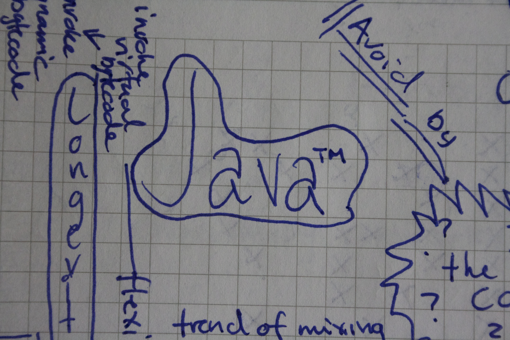
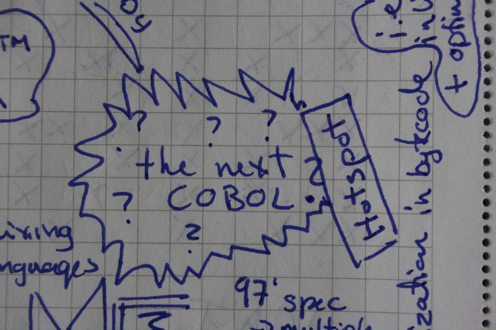
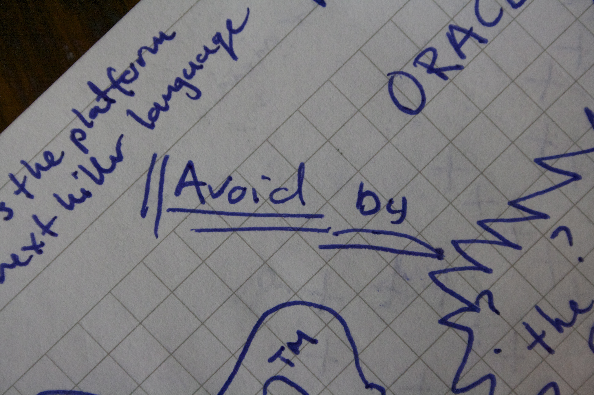
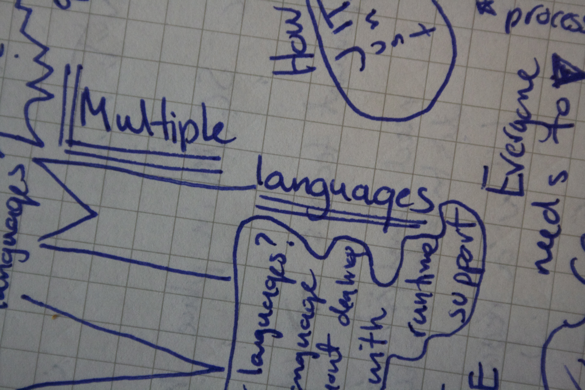
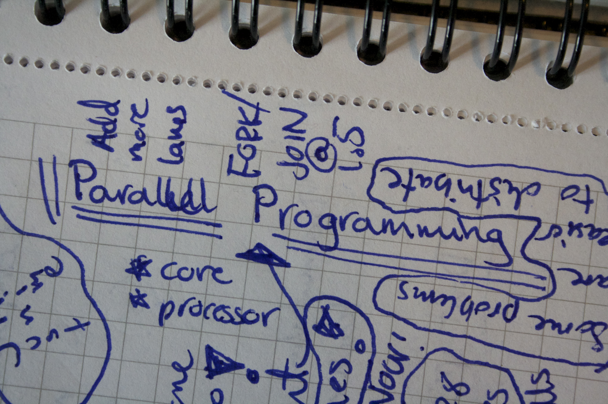
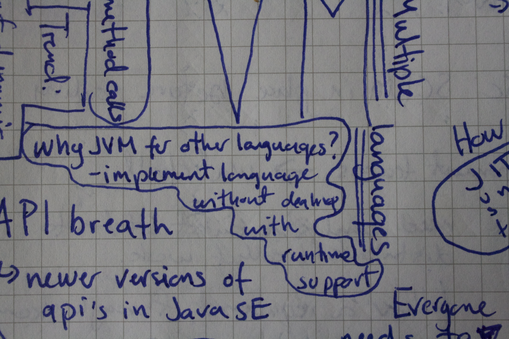
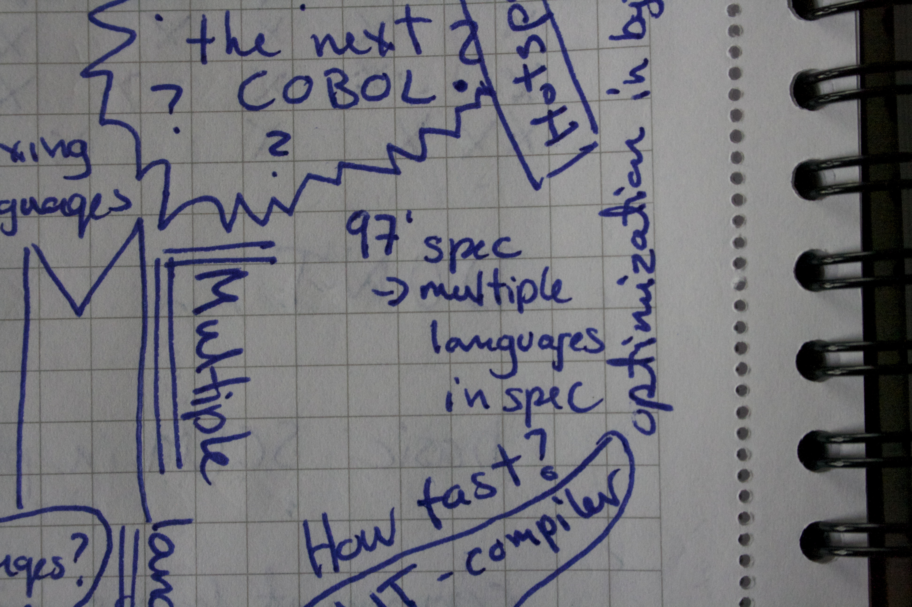
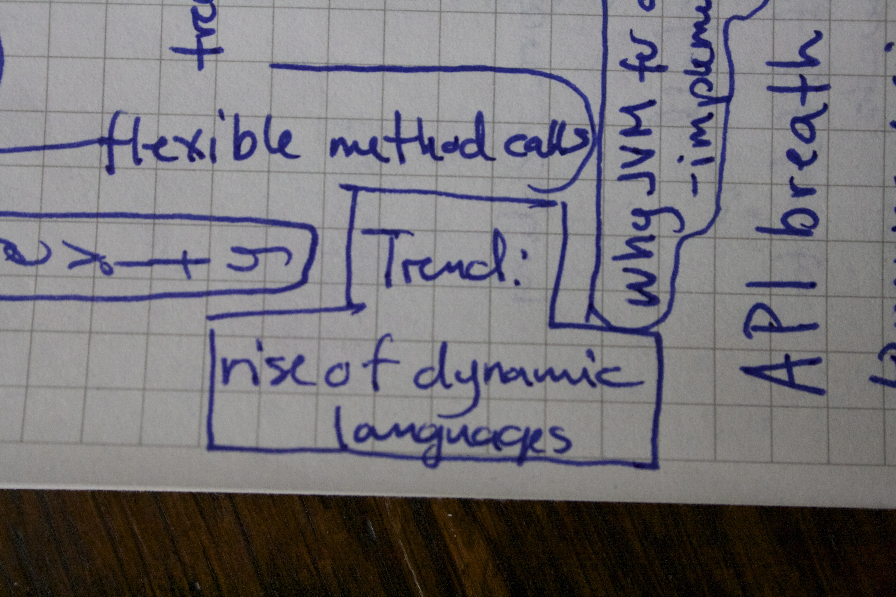
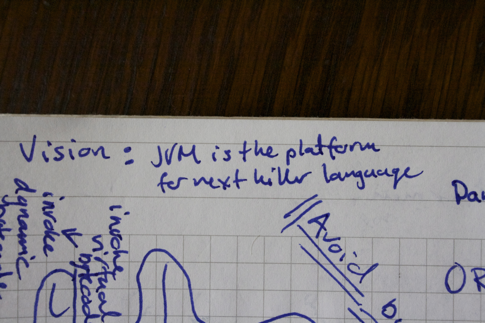

.center.middle # Invoking Some Dynamics __Scala & JVM__ [@miss_haugen](http://twitter.com/miss_haugen) | [@rflob](http://twitter.com/rflob) --- .center.middle #invokedynamic ---- ny bytecode-instruksjon --- .center.middle  --- .center.middle  --- .center.middle  --- .center.middle  --- .center.middle  --- .center.middle  --- .center.middle  --- .center.middle  --- .center.middle  --- .center.middle # invokevirtual ---- vanlig metodekall på et objekt --- # invokevirtual public static void main(String ... args) { KillerApp app = new InsaneApp(); String text = app.getAwesomeText(1); } ---- NEW InsaneApp DUP INVOKESPECIAL InsaneApp.<init>()V ASTORE 1 ALOAD 1 ICONST_1 INVOKEVIRTUAL KillerApp.getAwesomeText(I)Ljava/lang/String; ASTORE 2 --- .center.middle Hva er utfordringen med dynamisk typede språk på JVM? --- # invokevirtual INVOKEVIRTUAL KillerApp.getAwesomeText(I)Ljava/lang/String; Bytekoden må vite om: - objektets klasse (referansetypen) - metodenavn - antall argumenter og klassene deres - returtype (?) --- # invokevirtual INVOKEVIRTUAL KillerApp.getAwesomeText(I)Ljava/lang/String; JVM stoler ikke på kompilert kode! - sjekker at metode faktisk er definert av den statiske typen til mottakerobjektet --- .center.middle #invokedynamic ---- Tam-tara-taaaa! --- # invokedynamic Bytekode må vite om - objectreferanse - metodenavn - parameter bundle --- # invokedynamic INVOKEDYNAMIC <method-specification> <n> - method-specification: metodenavn, argumenttyper, og returtype --- # invokedynamic Viser seg å være noe komplisert... 1. første invokedynamic fører til et kall til "bootstrap-metode" som gjør selve resolvingen til faktisk metode 2. senere kall til samme invokedynamic gjenbruker resultatet fra bootstrap-metoden --- # invokedynamic - pakken java.dyn - MethodHandle, anonym referanse til en JVM-metode - Bootstrap Method: muliggjør deltagelse av språk-runtime til å delta i selve dispatchingen av metodekall. I tillegg kan JVM se bort fra språk-runtimen dersom dispatch ikke endres. --- # Kritikk? --- .center.middle # Oracle Is Everyones Friend! Yes really!